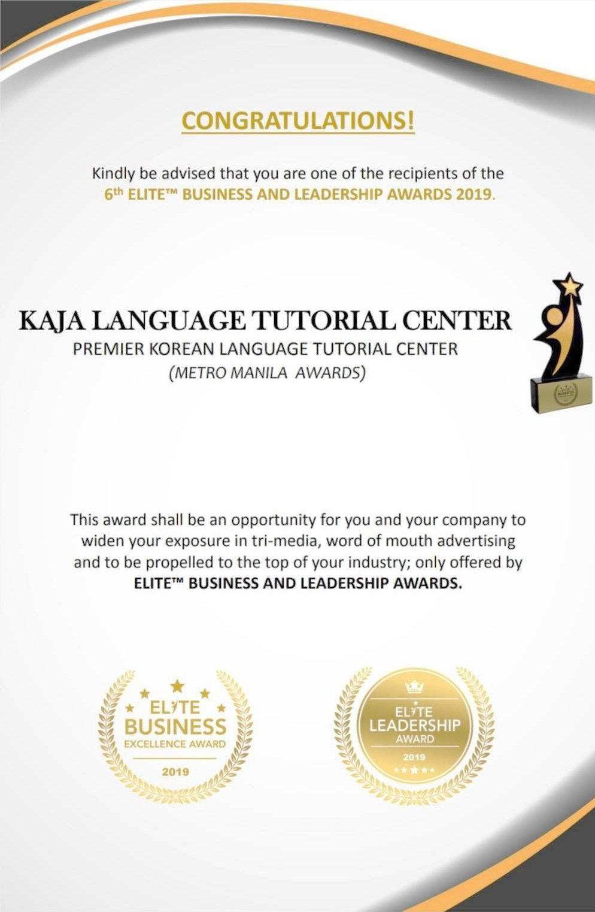
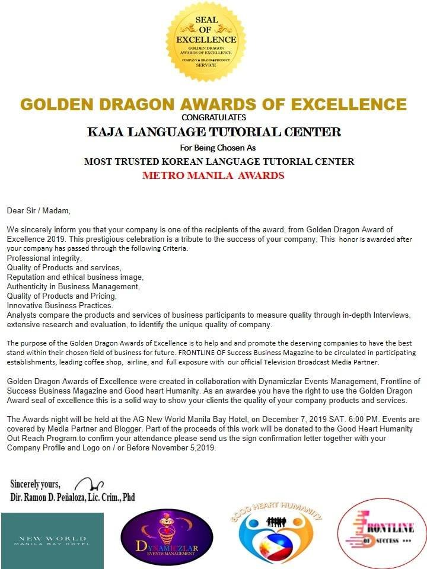

Our mission.
We help learners work toward their dreams and career goals through quality language training and an engaging, enjoyable learning experience.

Korean language learning with personal guidance, cultural understanding, and a community that supports your next step.
We help learners work toward their dreams and career goals through quality language training and an engaging, enjoyable learning experience.
We aim to be a center of excellence in language learning, helping every learner reach their potential and make a positive difference wherever they go.
Based on Kaja’s original About Us page. Contact the school for current course availability.
Awards shared on Kaja’s original website.


Explore classes and registration with the school.